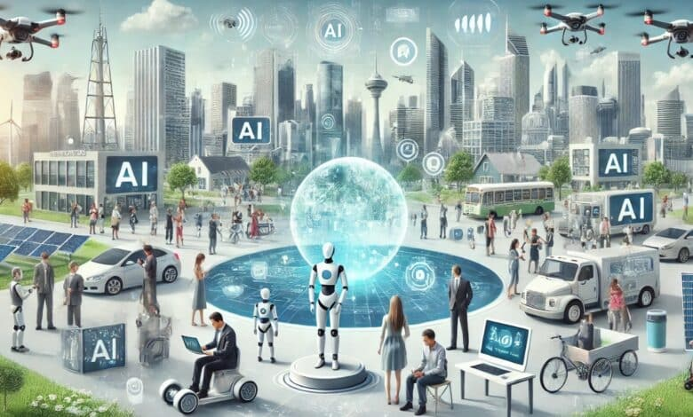

الذكاء الاصطناعي هو أحد أهم مجالات التطور التكنولوجي في العصر الحديث حيث يهدف
إلي تصميم أنظمة و برامج
قادرة على محاكاة قدرات الانسان الذهنية مثل التفكير
والتعلم وإتخاذ القرار ويعتمد هذا المجال على مجموعة من
التقنيات المتقدمة
مثل التعلم الالي و معالجة اللغة الطبيعية مما يتيح للالات فهم المعلومات
والتفاعل معها بذكاء
قبل البدء، يجب تحديد الهدف بوضوح، مثل: كتابة محتوى أو أبحاث تحليل بيانات تصميم صور أو فيديوهات حل مشكلات تقنية يساعد تحديد الهدف على اختيار الأداة المناسبة وتحقيق أفضل النتائج
توجد العديد من أدوات الذكاء الاصطناعي، ويجب اختيار الأداة وفقًا للاستخدام المطلوب، مثل: أدوات الكتابة والتوليد النصي أدوات التصميم وإنشاء الصور أدوات الترجمة أدوات تحليل البيانات
تعتمد جودة النتائج على وضوح التعليمات، لذلك يجب: كتابة طلب دقيق ومحدد تحديد اللغة والأسلوب المطلوب توضيح الهدف من الاستخدام كلما كانت التعليمات واضحة، كانت النتائج أفضل
على الرغم من دقة الذكاء الاصطناعي، إلا أنه قد يخطئ أحيانًا، لذلك: يجب مراجعة المحتوى الناتج التأكد من صحة المعلومات تعديل الأخطاء إن وجدت
:أمثلة
:أمثلة
:أمثلة

سيصبح أكثر ذكاءً وقدرة على التعلم الذاتي دون تدخل بشري كبير
ظهور الذكاء الاصطناعي العام القادر على أداء مهام مشابهة للإنسان. دخوله في جميع مجالات الحياة
في الطب: تشخيص الأمراض بدقة أكبر في التعليم: تقديم تعليم مخصص لكل طالب حسب مستواه